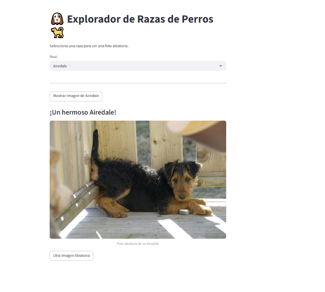

Bienvenida
¡Bienvenido al proyecto del Segundo Parcial de Sistemas Expertos! Aquí presentamos ejemplos prácticos del uso de APIs públicas y personalizadas para obtener, procesar y mostrar información en tiempo real.
Integrantes
Silvia Raquel Ramos
Marvin Antonio Barrera
APIs Creadas

Explorador de Razas de Perros
Visualiza imágenes de distintas razas utilizando la Dog API.
Ir a Dog API
Rick and Morty Explorer
Descubre personajes y episodios con la Rick and Morty API.
Ir a Rick and Morty API¿Qué es una API?
Una API (Interfaz de Programación de Aplicaciones) es un conjunto de reglas que permite que dos aplicaciones se comuniquen entre sí. Facilita el intercambio de datos y la integración entre servicios, actuando como un puente que simplifica el desarrollo y fomenta la innovación en sistemas modernos.
Contacto
Para más información, contáctanos en: apis@unab.edu.sv